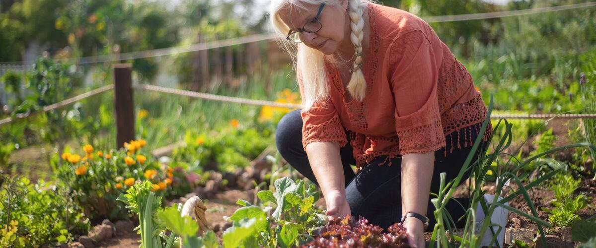

Timing and seasons · Oregon · Washington · Idaho
How the Seasons Change What You Grow
Spring, summer, fall and winter each ask for different crops and different jobs in an Oregon, Washington or Idaho garden. A season-by-season guide with tips.
If you're new to gardening here, or new to the region, the year can feel confusing. People talk about planting in February, harvesting in December and doing nothing in August except watering. Once you see the pattern, though, it makes sense, and it's a big part of what makes gardening in the Northwest so rewarding.
A Northwest garden doesn't run on one calendar. The same week can be planting time in Seattle and still frost season in Bend, and a crop that thrives in April can sulk in July. Knowing what each season does to your plants, and what it asks of you, is most of the skill. This guide walks through the year and points to the detailed articles for each job.
How long your season really is
The frost-free season, from the typical last spring frost to the typical first fall frost, is the backbone of every planting date. From NOAA records it runs about 266 days in Seattle and 251 in Portland, but about 180 in Boise, 169 in Spokane and only 97 around Bend and Redmond. That gap is why one region's advice can be wrong in another. Our article on what your last frost date really means explains how to read these numbers, and your town calendar has your own.
Plants sort into two camps. Cool-season crops (peas, lettuce, spinach, kale, cabbage, carrots, radishes) grow best in mild weather and handle light frost. Warm-season crops (tomatoes, peppers, beans, squash, corn, basil) need warm soil and warm nights and are killed by frost. Most seasonal planning is just putting each camp in the weather it likes.
Spring: cool crops first, warm crops wait
Spring is when the garden fills up, and when most mistakes happen. A sunny week tempts people to plant everything at once, but cold, wet soil is what holds Northwest gardens back, especially west of the Cascades.
- Early spring: sow peas, spinach and radishes, and set out lettuce, onions and cabbage-family transplants. These go in weeks before the last frost.
- Indoors: start tomatoes and peppers on schedule (see starting seeds indoors) and give them a week or so of hardening off before they go out.
- Late spring: warm crops go out only after your last frost and once the soil has warmed. Soil temperature is a better guide than the calendar.
Spring tips: keep row cover or old sheets handy for frosty nights, start slug control early (here's how), and don't dig or walk on beds while the soil is sticky: squeeze a handful, and if it stays in a muddy ball, wait a few days.
Summer: heat, water and the second planting
Summers here are dry almost everywhere, even west of the Cascades, where July and August get little rain. Warm crops finally take off, and cool crops planted in spring start to bolt (go to seed) as days get long and hot.
- Water deeply, not daily. Mulch the beds once the soil is warm and see how much to water in a dry summer.
- Replace what bolts. Pull spent lettuce and peas and resow with beans, or keep small sowings going all summer with succession planting.
- Plant for fall and winter in midsummer. It feels early, but kale, broccoli, carrots and other winter crops have to be sized up before the days shorten. In short-season towns the window comes even sooner.
Summer tips: water in the morning so leaves dry before evening, pick beans, zucchini and cucumbers often so plants keep producing, and watch tomatoes for late blight once the late-summer dews return (what to look for).
Fall: harvest, plant and protect
Fall is the busiest harvest season and a planting season at the same time. Typical first frosts are around October 12 in Spokane, October 21 in Boise and November 19 in Portland, so the east side has to wrap up warm crops weeks before the west.
- Harvest warm crops before frost. Pick tomatoes, peppers, squash and beans ahead of the first cold night, and bring in winter squash once the skin is hard.
- Plant for next year. Fall is the time for garlic, spring bulbs and many perennials, which root in over the cool, damp months.
- Cover the soil. Sow a winter cover crop or spread leaves over empty beds so winter rain doesn't wash the soil away. Putting the garden to bed has the full checklist.
Fall tips: save your fallen leaves for leaf mold, write down what did well and what didn't while you still remember, and clear out diseased plants rather than composting them.
Winter: rest, plan and pick what's still standing
West of the Cascades, winter is mild enough that kale, leeks, chard, collards and other hardy crops keep standing in the garden for picking; our fall and winter vegetable garden guide covers which ones and how. East of the Cascades and in the high desert, the ground freezes and most of the garden rests.
- Plan next year. Sketch your beds, move crop families to new spots with a simple crop rotation, and order seed early. A free garden plan gives you a dated to-do list for your town.
- Prune and plant fruit. Late winter is the time for pruning apples and pears and planting bare-root trees.
- Look after your tools. Clean and sharpen them, and drain hoses before hard freezes.
Winter tips: stay off wet beds so the soil doesn't compact, check stored potatoes, squash and onions every few weeks for soft spots, and get a soil test done before spring so you know whether you need lime (soil pH explained).
Shift the advice for where you live
West of the Cascades, the season is long but cool, so the challenge is warmth: pick early-ripening varieties and use the long fall and winter for cool crops. East of the Cascades and in Idaho, summers are hot and the season is shorter, so the challenge is timing: get warm crops in as soon as it's safe and be ready to cover them at both ends. In the high desert, every week counts; short-season gardening in Central Oregon has the playbook. For a month-by-month list of jobs, see the garden calendar.